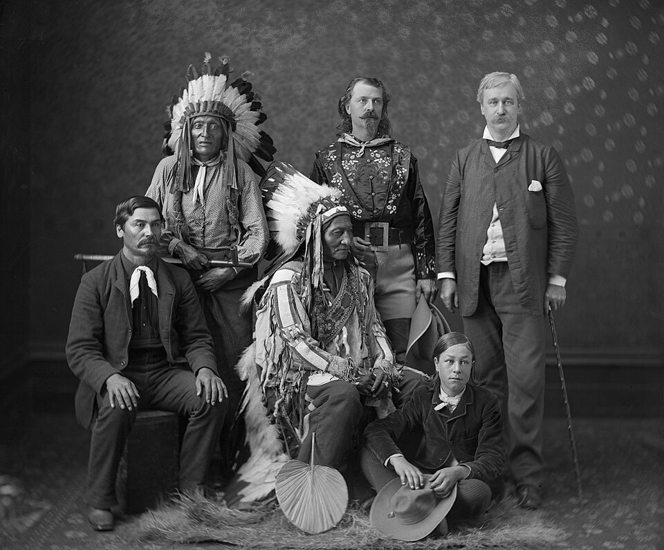
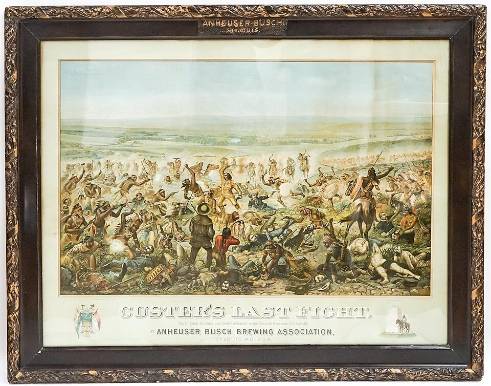
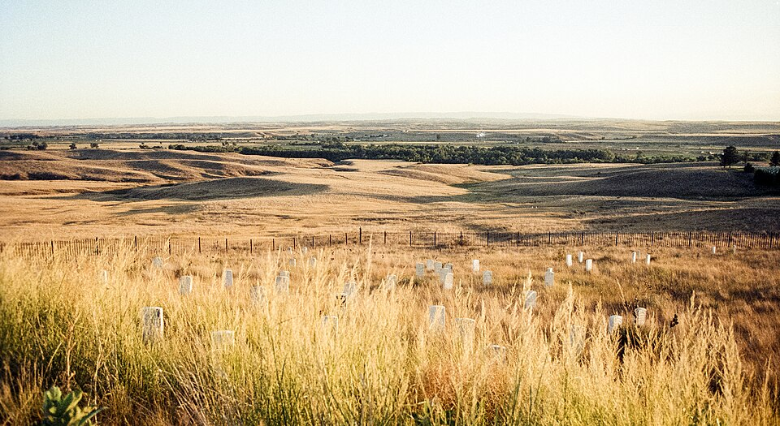

⏱️ 10초 카드 · 대평원 인디언 전쟁 (1831?~1890)
리틀빅혼의 승리블랙힐스고스트 댄스
여는 질문 — 이긴 전투가 왜 한 민족의 운명을 바꾸지 못했을까?
이름
한국어시팅 불
원어Tȟatȟáŋka Íyotake
실제 발음시팅 불 (타탕카 이요타케)
로마자Sitting Bull
영어권Sitting Bull
별칭앉은 소
왜 이 사람인가
이 도감에서 시팅 불은 '서부 개척'이라는 말의 뒷면이에요. 한쪽의 '개척'은 다른 쪽에겐 '침략'이었죠. 그는 가장 큰 승리(리틀빅혼)를 거두고도 결국 패배할 수밖에 없었던 사람 — 총이 아니라 '들소의 절멸'이라는 구조가 그의 세계를 무너뜨렸기 때문이에요. 이긴 자의 기록만 남는 역사에서, 진 쪽이 무엇을 지키려 했는지 묻게 하는 인물이에요.
생애
대평원 라코타의 전사이자 성자(위차샤 와칸)였어요. 미국이 블랙힐스(라코타의 성지 — 금이 발견되자 조약을 깨고 침입했죠)를 빼앗으려 하자, 여러 민족을 모아 맞섰어요.
1876년 리틀빅혼 전투에서 그의 연합은 커스터의 제7기병대를 전멸시켰어요 — 원주민 저항 사상 가장 큰 승리였죠. 그러나 들소가 절멸되고 보급이 끊기며 결국 투항해야 했고, 보호구역에 갇힌 뒤에도 '우리 땅을 팔지 않는다'는 입장을 굽히지 않았어요.
1890년 '고스트 댄스' 운동(빼앗긴 세계의 회복을 비는 종교 운동)을 두려워한 당국이 그를 체포하려다 — 그 과정에서 살해됐어요. 2주 뒤 운디드니 학살이 이어집니다. 그는 이렇게 말했다고 전해져요. "나는 내 민족이 살아온 방식 그대로 살았을 뿐, 그것이 죄라면 나는 죄인이다."
자료로 보기 — 유묵·사진



남긴 말
“내가 백인의 땅이나 돈을 단 한 푼이라도 훔친 적이 있소? 우리는 우리 방식대로 살았을 뿐이오.”
조약 파기와 보호구역의 삶에 맞서 — 자신을 변호하며. · 출처: 시팅 불의 말로 전해짐(전언)
“이 땅을 팔지 않겠소. 흙 한 줌도.”
성지 블랙힐스를 사들이려는 미국 정부에 거듭 거절하며. · 출처: 전언
연표
- 1831?출생 (지금의 사우스다코타)
- 1876리틀빅혼 전투 — 커스터 기병대 격파
- 1881들소 절멸·기아 속 투항
- 1890.12체포 과정에서 피살 — 2주 뒤 운디드니
생애의 길 — 대평원, 이긴 전투와 진 세계 🗺️
성지에서 가장 큰 승리로, 그리고 망명과 죽음으로. 번호를 차례로 눌러 보세요.
현재 지도 위 경로예요. 가장 큰 전투를 이기고도, 들소가 사라진 평원에서는 살아갈 방법이 없었어요 — 한 사람의 용기로는 막을 수 없는 구조의 비극이죠.
빛과 그림자그의 '그림자'는 그 자신의 것이 아니라 시대의 것이에요 — 이긴 전투로도 막을 수 없던 구조(들소 절멸·조약 파기)의 비극이죠. 패배한 쪽의 지도자를 '용감한 적'으로만 박제하지 않고, 그가 지키려 한 것이 무엇이었는지 묻는 것 — 이 카드의 목적이에요.
더 깊이 (고등·일반)
블랙힐스 — 성지를 빼앗은 금
1868년 조약은 블랙힐스를 라코타의 땅으로 보장했어요. 그런데 그곳에서 금이 발견되자 미국은 조약을 깨고 광부와 군대를 들여보냈죠. 시팅 불에게 블랙힐스는 단순한 땅이 아니라 성지였어요 — 그래서 그는 '팔 수 없다'고 했고, 여러 민족을 모아 맞섰어요. 갈등의 뿌리에는 늘 '약속(조약)'이 깨지는 일이 있었죠.
참고: 1868 라라미 조약·블랙힐스 일반
리틀빅혼 — 원주민 저항 최대의 승리
1876년 6월, 시팅 불의 환영(예지) 이야기와 함께 모인 대연합은 리틀빅혼강에서 커스터 중령의 제7기병대를 전멸시켰어요. 미국 독립 100주년 잔치에 찬물을 끼얹은, 원주민 저항 사상 가장 큰 승리였죠. 시팅 불은 직접 싸우기보다 정신적 지도자로 사람들을 묶는 역할을 했다고 전해져요.
참고: 리틀빅혼 전투(1876) 일반
캐나다 망명, 그리고 투항
큰 승리에도 불구하고 미군의 추격과 보급 차단이 이어졌어요. 무엇보다 평원의 들소가 빠르게 절멸하면서 — 들소에 기대 살던 사람들에게 그것은 곧 굶주림이었죠. 시팅 불은 한때 국경을 넘어 캐나다로 피신했지만, 거기에도 들소는 없었어요. 결국 1881년 기아 속에 포트 뷰퍼드에서 무기를 내려놓았어요.
참고: 들소 절멸·투항(1881) 일반
버펄로 빌의 쇼 — 적에게 박수받은 전사
투항 뒤 시팅 불은 한동안 '버펄로 빌의 와일드 웨스트 쇼'에 출연해 미국과 유럽에서 유명인이 됐어요. 자신을 무찌른 나라의 관중에게 박수를 받는 기묘한 처지였죠. 공연으로 번 돈을 거리의 가난한 아이들에게 나눠 줬다는 일화도 전해져요 — 그는 '왜 백인은 풍요 속에서도 아이를 굶기느냐'고 물었다고 해요.
참고: 와일드 웨스트 쇼 출연(1885) 일반
고스트 댄스와 죽음 — 운디드니로 가는 길
1890년, 빼앗긴 세계의 회복을 비는 종교 운동 '고스트 댄스'가 평원에 퍼졌어요. 이를 두려워한 당국이 시팅 불을 체포하려다 — 그 과정에서 그를 살해했죠. 2주 뒤 운디드니에서 수백 명의 라코타가 학살당하며, 대평원 인디언 전쟁은 비극으로 막을 내렸어요.
참고: 고스트 댄스·운디드니(1890) 일반
사람의 그물 — 함께 읽을 인물
더 공부하기 — 여기서 출발하세요
📚 책으로
- 나를 운디드니에 묻어다오 ↗ · 디 브라운원주민의 눈으로 다시 쓴 서부 개척사 — 시팅 불의 시대를 통째로.
📜 1차 사료
- 시팅 불의 연설·인터뷰 기록조약과 땅, '우리 방식대로 살 권리'에 대한 그의 말들.
🎬 영상으로
- HISTORY 다큐 〈Sitting Bull〉 (2025) ↗🟢 라코타 배우·제작진이 함께 만든 2025년 다큐시리즈의 한 장면 — 미군에 맞선 저항.
📍 가 볼 곳
- 리틀빅혼 전장 (몬태나) ↗1876년 대승의 현장 — 지금은 국립기념지.
- 스탠딩록 보호구역그가 살해된 곳 — 2016년 송유관 반대 시위로도 알려진 땅.